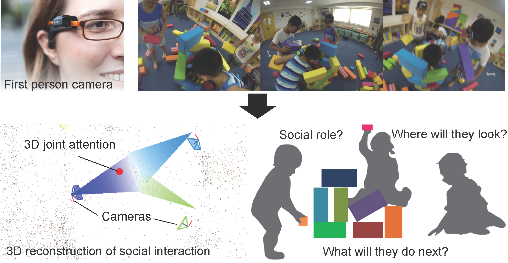
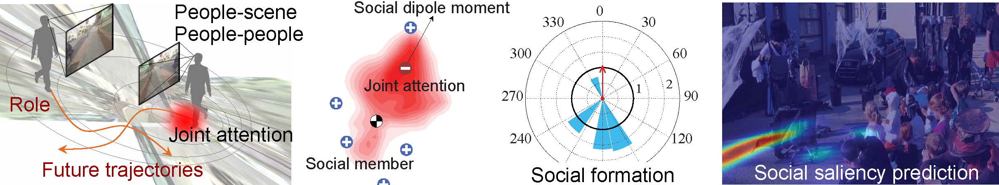
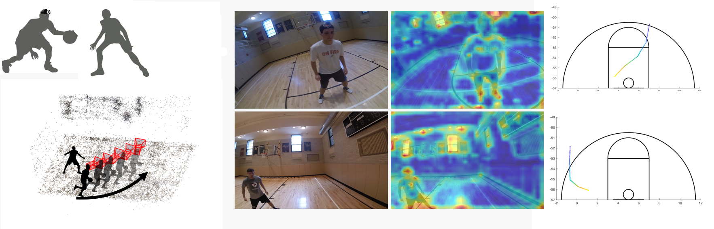
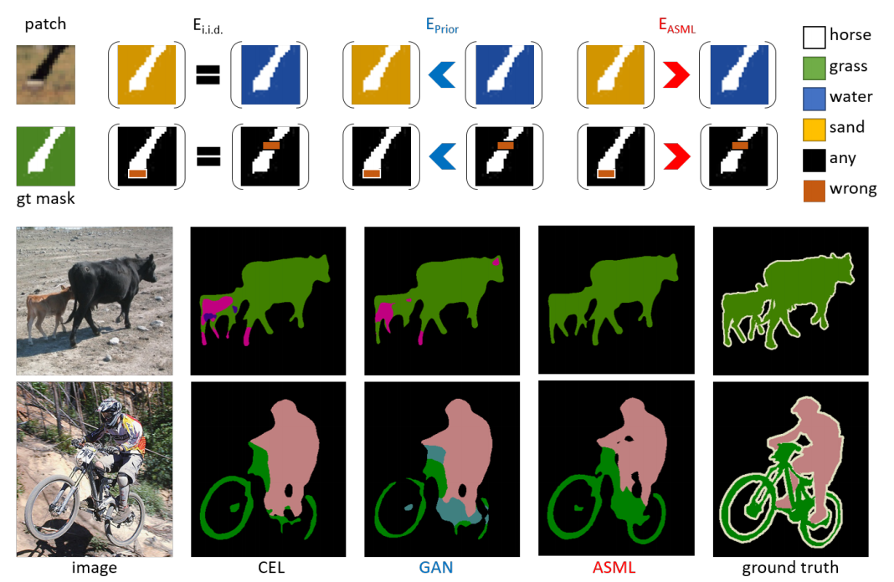
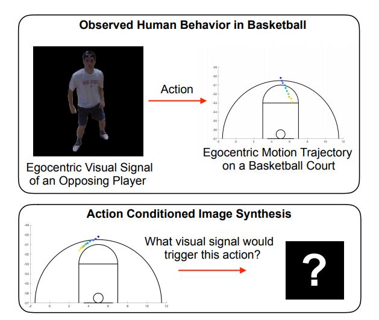

We propose to use first-person cameras as one collective instrument to model natural social interactions in a collaborative activity. (Bottom row) We exploit 3D joint attention precisely measured by first person cameras to recognize their social roles and future activities (movement and attention change).
Students: Gedas Bertasius, Shu Shan, Jyh-Jing Hwang
First-person videos are forging a new form of visual media that stimulates not only our visual sensation but also our sensation of social interaction. In this research program, we propose to harness multiple first person cameras as one collective instrument to capture, model, and predict social behaviors as shown in Figure 1. Specifically, our research focus will be on precise modeling social interactions by leveraging the duality between social attention and roles. Social attention provides a cue for recognizing social roles, and social roles facilitate the predictions of dynamic social formation change and its associated social attention.

Figure 2. We leverage a duality between social attention and roles: social attention provides a cue to recognize social roles, and the social roles facilitate predicting dynamics of social formation (middle), and therefore social attention.
Social attention, or joint attention, is defined as the intersection of gaze directions of people in social interaction (bottom row in Figure 1). Understanding social attention--specifically knowing where it is and knowing how it moves-- provides a strong cue to analyze and recognize group behaviors. With multiple first-person cameras, we can measure the precise location of the social attention in 3D using structure from motion.
Interestingly, a geometric configuration of people, or the social formation, is strongly correlated to the social attention of the group (Figure 2). For instance, a circular formation is created by the audience around a street busker while an equilateral triangular formation is often observed in triadic interactions. We study dynamic patterns of such social formations evolved in people-people and people-scene interactions to recognize social roles and predict collective social actions.
Inspired by our prior work, we will build a visual social memory that encodes a) geometric social formation with respect to the first-person (role), b) visual context from first-person view, and c) visual context of first-person seen by third person views. This visual social memory is associated with a path in the past and future. To predict future possible paths, the current first-person view provides an "indexing" key to the memory system. These future paths are refined by path planning costs reflecting social compatibility, e.g., avoiding collision and unique social leader.
Figure 3. We predict the person whom we will interact with in 2 seconds. Our methods requires no supervised human labels. Left, input first person image; Middle, ground truth; Right, our prediction.
In our first research direction, we study how people signal intention to interact with each other in team sports. We have seen major progress in recognizing human gesture in terms of body joints and detect human faces in the video. However, the overall body language for communicating intention can be very subtle. For example in adversarial game players are both trying to signaling their intention and trying to conceal their intentions from the opposite team. Furthermore, body language for communication can be complex. Even for human observers recognizing human intention requires paying attention to details of facial expression, head posture, and overall body pose, and our performance is far from perfect. This makes generating human labeling for training a machine learning algorithm very costly and unreliable.
The question we ask is that can an algorithm learn to recognize body language for predicting the interaction between two agents by simply watching many hours of videos of such interaction (without supervised learning labels).
We generated a dataset contains 48 distinct college-level players in unscripted basketball games with 10.3 hours of videos.
We first measured the human performance on this dataset, and measured human performance is between 80% to 93% accuracy across 5 subjects.
We develop an EgoSupervision learning scheme, demonstrate that despite not using human-generated supervised labels our method achieves (77.% accuracy) similar or even better results than fully supervised method (77.8% accuracy). Our cross-model EgoSupervision operates by transforming the outputs of a pretrained pose-estimation network, into pseudo ground truth labels, which are then used as a supervisory signal to train a new network for a cooperative intention task.
Gedas Bertasius, and Jianbo Shi, "Using Cross-Model EgoSupervision to Learn Cooperative Basketball Intention" IEEE International Conference on Computer Vision (ICCV) Workshops, 2017 [paper]

Figure 4. We predict basketball players < future location and gaze direction up to 5 seconds. The first column and top row: a comparison between the predicted trajectories with gaze directions in blue with ground truth trajectory in red. First column and bottom row: a comparison between the predicted joint attention in green with the ground truth joint attention in orange. Second column: a comparison between a target sequence (odd rows) and the retrieved sequence (even rows). The retrieved sequence has similar social configuration as time evolves. The predicted joint attention are projected onto the target sequence to validate the prediction. The joint attention agrees with scene activities.
In our second direction, we developed a method to predict the future movements (location and gaze direction) of basketball players as a whole from their first person videos. The predicted behaviors reflect an individual physical space that affords to take the next actions while conforming to social behaviors by engaging to joint attention. Our key innovation is to use the 3D reconstruction of multiple first person cameras to automatically annotate each other's visual semantics of social configurations.
We leverage two learning signals uniquely embedded in first person videos. Individually, a first person video records the visual semantics of a spatial and social layout around a person that allows associating with past similar situations. Collectively, first person videos follow joint attention that can link the individuals to a group.
We learn the egocentric visual semantics of group movements using a Siamese neural network to retrieve future trajectories. We consolidate the retrieved trajectories from all players by maximizing a measure of social compatibility---the gaze alignment towards joint attention predicted by their social formation, where the dynamics of joint attention is learned by a long-term recurrent convolutional network. This allows us to characterize which social configuration is more plausible and predict future group trajectories.

Figure 5. Visual semantics from first person view lead to better future prediction: left, prediction with location and orientation prior; right, prediction with first person view to retrieve trajectories, which shows strong selectivity. GT: ground truth trajectory, Ret: retrieved trajectory
We established a baseline prediction method that uses the location, velocity, and orientation of players which encodes not only spatial layout, e.g., basket, center line, and background, but also social layout, e.g., where are other players, around the person.
We compare our predicted joint attention with 7 baseline algorithms which it shows 2 m error after 2 seconds vs. 15 m error after 2 seconds for algorithm without using first person video (position and orientation information only).
Shan Su, Jung Pyo Hong, Jianbo Shi, and Hyun Soo Park "Predicting Behaviors of Basketball Players from First Person Videos" Conference on Computer Vision and Pattern Recognition (CVPR) (spotlight), 2017 [paper, presentation, video]

Figure 6. We predict the strategy and plan for a basketball player in an one-on-one game.
Consider LeBron James, arguably the greatest basketball player in the world today. People often speculate about which of his traits contributes most to his success as a basketball player. Some may point to his extraordinary athleticism, while others may credit his polished basketball mechanics (i.e., his ability to accurately pass and shoot the ball). While both of these characteristics are certainly important, there seems to be a general consensus, among sports pundits and casual fans alike, that what makes LeBron truly exceptional is his ability to make the right decision at the right time in almost any basketball situation.
Now, imagine yourself inside the dynamic scene shown in Figure 5, where, as a basketball player, you need to make a series of moves to outmaneuver your defender and score a basket. In doing so, you must evaluate your position on the court, your defender’s stance, your defender’s court position relative to the basket, and many other factors, if you want to maximize your probability of scoring. For instance, if you observe that your defender is positioned close to you and leaning more heavily on his right leg, you might exploit this situation by taking a swift left jab-step followed by a hard right drive to the basket, throwing your defender off balance and earning you an easy layup.
We developed a model that uses a single first-person image to generate an egocentric basketball motion sequence in the form of a 12D camera configuration trajectory, which encodes a player’s 3D location and 3D head orientation throughout the sequence. To do this, we first introduce a future convolutional neural network (CNN) that predicts an initial sequence of 12D camera configurations, aiming to capture how real players move during a one-on-one basketball game. We also introduce a goal verifier network, which is trained to verify that a given camera configuration is consistent with the final goals of real one-on-one basketball players.
Next, we propose an inverse synthesis procedure to synthesize a refined sequence of 12D camera configurations that (1) sufficiently matches the initial configurations predicted by the future CNN, while (2) maximizing the output of the goal verifier network. Finally, by following the trajectory resulting from the refined camera configuration sequence, we obtain the complete 12D motion sequence. Our model generates realistic basketball motion sequences that capture the goals of real players, outperforming standard deep learning approaches such as recurrent neural networks (RNNs), long short-term memory networks (LSTMs), and generative adversarial networks (GANs)
We constructed a first-person basketball dataset consisting of 988 sequences from one-on-one basketball games between nine college-level players. The videos are recorded in 1280×960 resolution at 100 fps using GoPro Hero Session cameras, which are mounted on the players’ heads. We extract the videos at 5 frames per second. We then randomly split all the sequences into training and testing sets, consisting of 815 and 173 sequences, respectively. Each sequence is about 25 frames long.
To the best of our knowledge, we are the first to generate egocentric basketball motion sequences in the 12D camera configuration space from a single first-person image.
Gedas Bertasius, and Jianbo Shi, "Egocentric Basketball Motion Planning from a Single First-Person Image", IEEE Conference on Computer Vision and Pattern Recognition, 2018 [paper, MIT sloan sports analytics conference]
The per-pixel cross-entropy loss (CEL) is widely used in structured output prediction tasks such as contour detection, semantic segmentation, and instance segmentation as a spatial extension of generic image recognition. However, the disadvantage of CEL is also obvious due to its additive nature and i.i.d. assumption of predictions. As toy examples in Fig. 7(top block), CEL would yield the same overall error in either situation. However, it is clear that mistakes in either scenario should incur different overall errors, which should be calculated from the structure of entire patch. Therefore, structural reasoning is highly desirable for structured output prediction tasks.
Various attempts have been made to incorporate structural reasoning into structured output prediction in a cooperative way, including two mainstreams, bottom-up Conditional Random Fields (CRFs) and top-down shape priors or Generative Adversarial Networks (GANs) : (1) CRF enforces label consistency between pixels and is commonly employed as a post-processing step, or as a plug-in module inside deep neural networks that coordinate bottom-up information. Effective as it is, CRF is usually sensitive to input appearance changes and needs expensive iterative inference. (2) As an example of learning top-down shape priors, GANs emerge as an alternative to enforce structural regularity in the structured prediction space. Specifically, the discriminator network is trained to distinguish the predicted mask from the ground truth mask.

Figure 7. (Top block) Motivation for ASML: Given incorrect structured predictions, the per-pixel cross-entropy loss (CEL) under i.i.d. assumption applies penalty equally; prior-based losses (such as GANs) penalize more on abnormal structures and thus encourage frequently co-occurring patterns and common shapes; ASML behaves oppositely after learning statistical structural mistakes and thus enables fine-grained structure discriminative power. (Bottom block) Real examples on PASCAL VOC 2012 validation set. PSPNet trained using CEL mostly fails at confusing context (top row) and ambiguous boundaries (bottom row) whereas using our ASML improves these two aspects.
Jyh-Jing Hwang, Tsung-Wei Ke, Jianbo Shi, Stella X. Yu, "Adversarial Structure Matching Loss for Image Segmentation", CVPR 2019 [paper]
We introduce a novel action conditioned image synthesis task and a method to solve it in the context of a basketball activity. Given a target action category, which encodes an egocentric motion trajectory of a current player, our model synthesizes a visual signal of an opposing player that would possibly cause the current player to perform that action. Our action conditioned image synthesis model consists of 1) a variational autoencoder (VAE), which generates masks of an opposing player, and 2) an ensemble of discriminative Action CNNs, which predict the next action of a current player. Initially, we train these two components of our system separately. Afterwards, we attach each Action CNN to the last layer of the VAE, and freeze the parameters of all the networks. During inference, given a target action category, we maximize its prediction probability at each Action CNN by backpropagating the gradients to the latent code of the VAE. Doing so iteratively, forces VAE to synthesize images that have high probability of a target action category. We show that our model generates realistic images that are associated with specific action categories, and it outperforms standard baselines by a large margin.

In a one-on-one basketball game, a player needs to outmaneuver his/her defender and score. Doing so requires assessing the stance of a defender, a defender’s torso orientation, and many other factors. A player uses these visual cues about his/her defender to decide what action to perform next (i.e. how to move). This can be formulated as a problem of mapping a visual signal to an action. In this work, we aim to solve an inverse of this problem, which we refer to as an action conditioned image synthesis. Given a target action, we synthesize an image of an opposing player, which would likely trigger the player to perform that action.

Shan Su, Jung Pyo Hong, Jianbo Shi, and Hyun Soo Park "Predicting Behaviors of Basketball Players from First Person Videos" Conference on Computer Vision and Pattern Recognition (CVPR) (spotlight), 2017 [paper, presentation, video]
Gedas Bertasius, and Jianbo Shi, "Using Cross-Model EgoSupervision to Learn Cooperative Basketball Intention" IEEE International Conference on Computer Vision (ICCV) Workshops, 2017 [paper]
Gedas Bertasius, and Jianbo Shi, "Egocentric Basketball Motion Planning from a Single First-Person Image", IEEE Conference on Computer Vision and Pattern Recognition, 2018 [paper, MIT sloan sports analytics conference]
Jyh-Jing Hwang, Tsung-Wei Ke, Jianbo Shi, Stella X. Yu, "Adversarial Structure Matching Loss for Image Segmentation" Conference on Computer Vision and Pattern Recognition (CVPR), 2019 [paper]